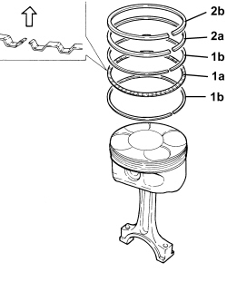
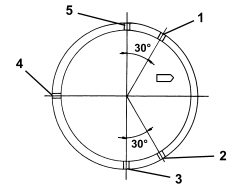
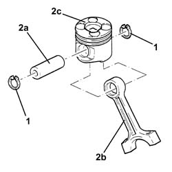
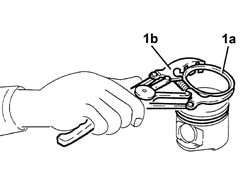
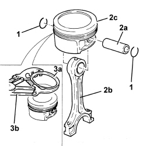

1028H60 SET OF PISTONS, GUDGEON PINS AND SEALS - REPLACE PISTONS AND CONNECTING RODS AT THE BENCH - INCLUDES ALIGNMENT AND BALANCING
- Path
- Procedures > 10 ENGINE > 1028 PISTONS AND CONNECTING RODS > 1028H PISTONS AND CONNECTING RODS > 1028H60 SET OF PISTONS, GUDGEON PINS AND SEALS - REPLACE PISTONS AND CONNECTING RODS AT THE BENCH - INCLUDES ALIGNMENT AND BALANCING
- Kind
- repair procedure (removal / refitting; the operation number is the code)
- Applies to
- all engines; all production periods
- Interactive page
- https://sloeber94.github.io/elrnDB-aBrrSpdr/en/#/946001853
Applies to: engines: 3.2 JTS; all production periods
 Removing
Removing
 Refitting
RefittingOp. 1028H54 PISTON WITH CONNECTING ROD - DISMANTLING AT THE BENCH
1. Remove the piston rings (1a) from the pistons using a suitable tool (1b).

Applies to: engines: 3.2 JTS; all production periods
Refitting
RemovingOp. 1028H54 PISTON WITH CONNECTING ROD - DISMANTLING AT THE BENCH
1. Using a suitable tool, place the first expansion ring (1a) in its housing and then the oil scraper rings (1b).
2. Using a suitable tool, place the seals (2a) and (2b) in their housings.

Applies to: engines: 3.2 JTS; all production periods
- Position the references for the seals on the piston as illustrated.
1. Lower oil scraper ring
2. Upper oil scraper ring
3. First piston ring
4. Expansion ring for oil scraper
5. Second piston ring

Applies to: engines: 2.4 JTD 20v; all production periods
Removing
Refitting1. Remove the piston rings.
2. Release the pin (2a) and separate the connecting rods (2b) from the pistons (2c).

Applies to: engines: 2.4 JTD 20v; all production periods
1. Remove the piston rings (1a) from the pistons using a suitable tool (1b).

Applies to: engines: 2.4 JTD 20v; all production periods
Refitting
RemovingCheck the alignment of the connecting rods using suitable equipment; if it is not correct, replace the connecting rod.
Check that the weight difference between the pistons corresponds to the recommended figures.
Subject | Value | |
|---|---|---|
. | Engine piston set | g |
- | Weight difference between pistons | ± 5 |
Subject | Value | |
|---|---|---|
. | Engine piston set | g |
- | Weight difference between connecting rods | ± 2.5 |

Applies to: engines: 2.4 JTD 20v; all production periods
Fit the piston rings on the pistons using the tool.
1. Join the connecting rods to the pistons so that the number printed on the connecting rod head (1a) is facing notch (1b) on the piston skirt for the oil jet housing.
Fit the pins and secure them using the circlips.

Applies to: engines: 2.2 JTS; all production periods
Removing
Refitting1. Remove the piston rings.
2. Release the pins (2a) and separate the connecting rods (2b) from the pistons (2c).
3. Remove the piston rings (3a) from the pistons using the tool (3b).

Applies to: engines: 2.2 JTS; all production periods
Refitting
Removing- Fit the piston rings on the pistons using the tool.
- Join the connecting rods to the pistons.
- Place the gudgeon pins in their housings and secure them using the circlips.